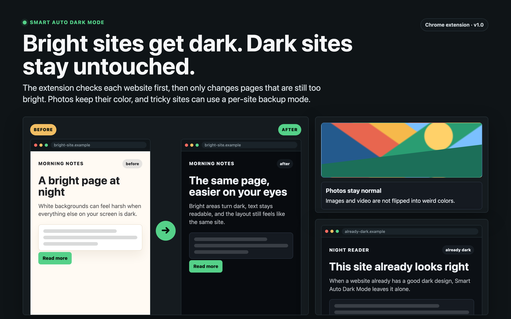
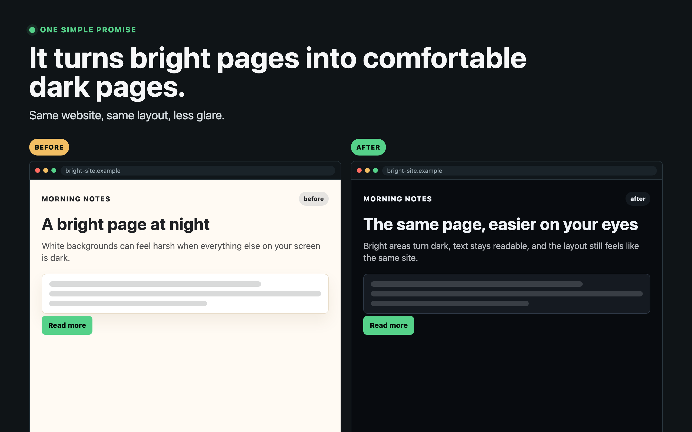
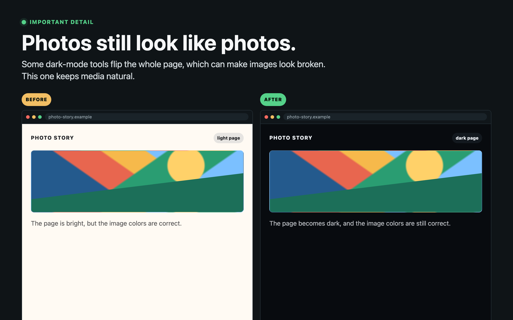
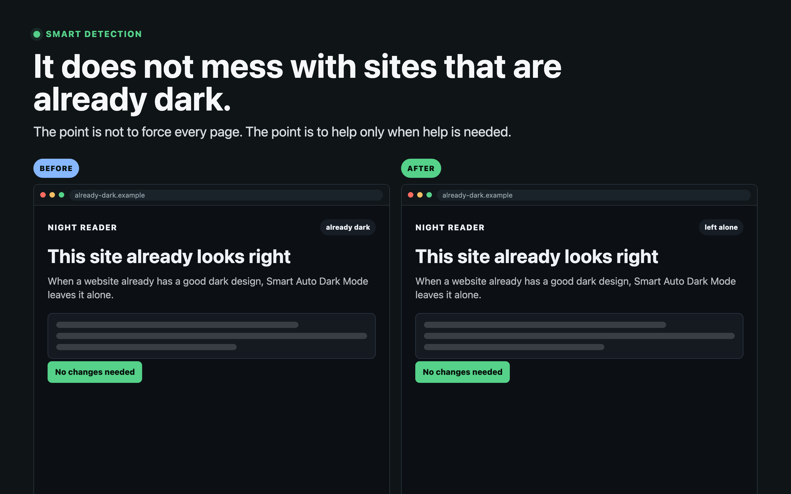
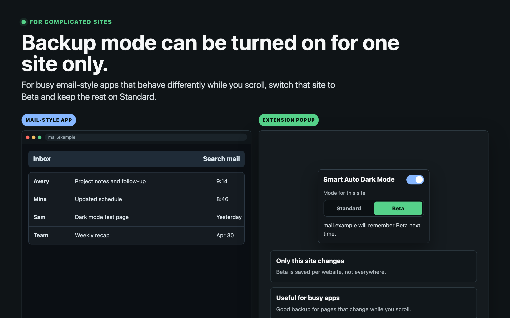
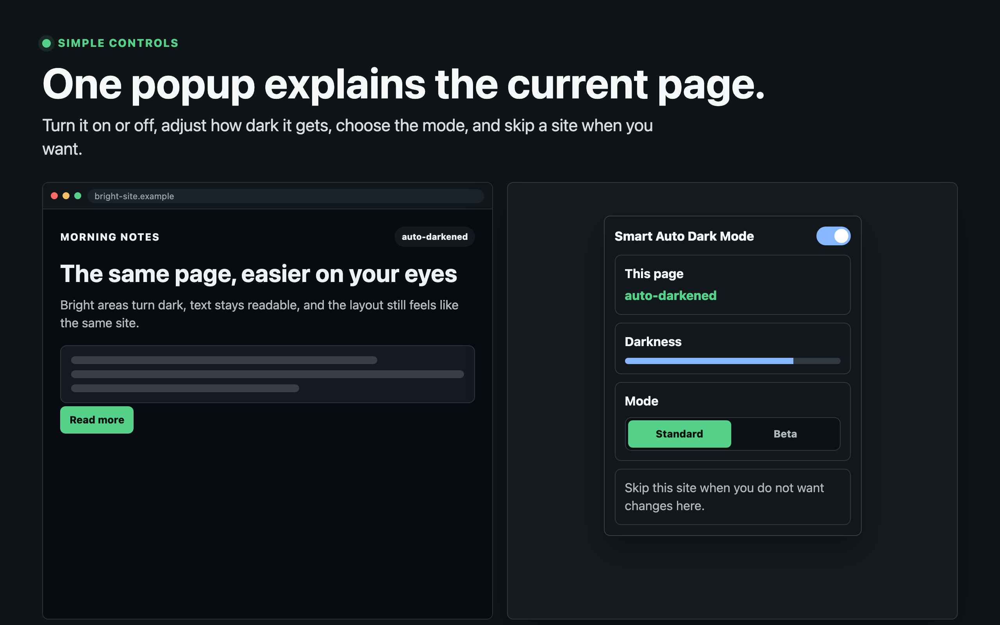

Chrome extension
Bright sites get dark. Dark sites stay untouched.
Smart Auto Dark Mode checks each page first, then applies a generated dark theme only when the site is still too bright. Photos, videos, and already-dark pages stay normal.
See what changes, and what does not.
The demos show the extension's core decisions: brighten-to-dark conversion, media protection, native dark-site detection, beta fallback, and the small popup controls.

Bright pages become comfortable dark pages.
Generated CSS darkens surfaces and preserves the page's layout, contrast, and readable text.

Photos and videos keep their colors.
Media elements are left alone so images do not turn into strange inverted negatives.

Already-dark sites stay untouched.
The extension samples the rendered page first, then skips sites that already look right.

Beta mode handles tricky web apps.
Per-site fallback mode gives complex pages a simpler renderer when generated CSS is not enough.

One popup controls the current site.
Turn it on or off, tune darkness, choose a renderer, and skip a site when you need to.
Built for real browsing.
Most dark-mode tools either invert everything or fight sites that already have dark mode. This one checks first and changes less.
Open source and local-first.
No analytics, no remote code, no browsing data collection. Settings stay in Chrome local storage.